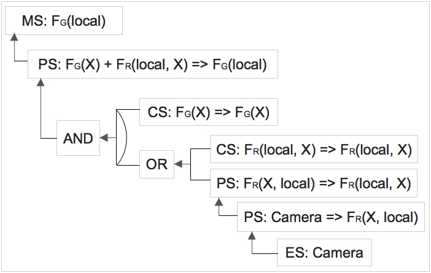
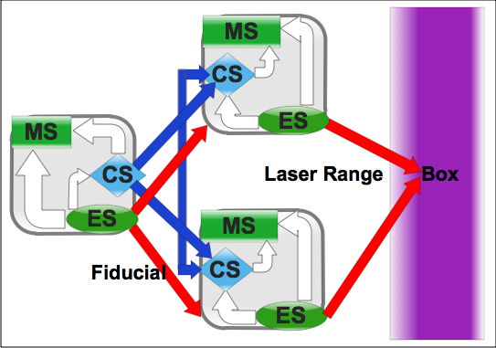
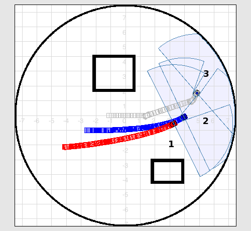
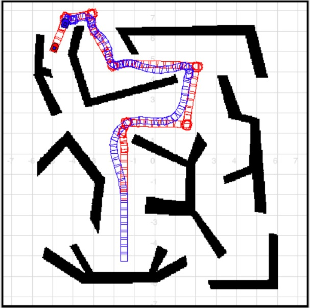
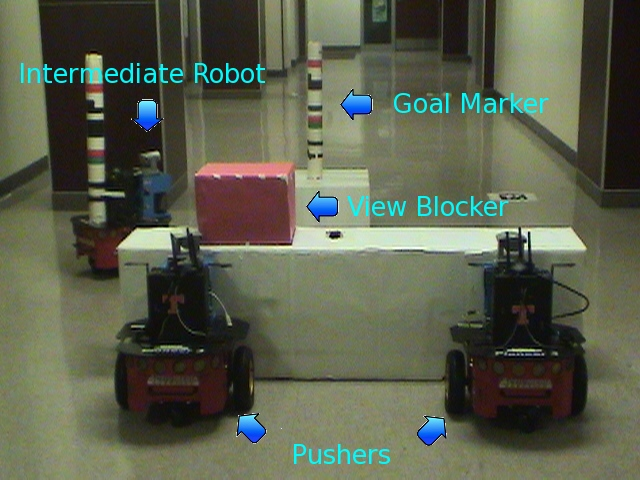

IQ-ASyMTRe

While most previous research on forming coalitions mainly concentrates on loosely coupled multirobot tasks, a more challenging problem is to address tightly coupled multirobot tasks that involve close robot coordinations, which often require capability sharing. General methods for autonomous capability sharing have been shown to greatly improve the flexibility of distributed systems. However, in addition to the interaction constraints between the robots and the environment as required by the tasks, these methods may introduce additional interaction constraints between the robots based on how the capabilities are shared. The satisfiability of these constraints in the current situation determines the feasibility of the potential coalitions. To achieve system autonomy, the ability to identify the potential coalitions that are feasible for task execution is critical. We introduce a general approach that incorporates this capability based on the ASyMTRe architecture. The extended architecture, which is called IQ-ASyMTRe, is able to find coalitions in which these required constraints are satisfied. When used to form coalitions, IQ-ASyMTRe sets up only feasible coalitions, thus enabling tasks to be executed autonomously. We have formally proven that IQ-ASyMTRe is sound and complete for forming executable coalitions.
Y. Zhang and L. E. Parker
IQ-ASyMTRe: Forming Executable Coalitions for Tightly Coupled Multirobot Tasks
IEEE Transactions on Robotics, 29(2): 400-416, 2013
Solution Space

In IQ-ASyMTRe, we build robot capabilities as schemas based on schema theory. Each scheme represents a motor, sensory, computational or communication schemas of the agent. Given a task, we must determine how to connect the different schemas of different robots to satisfy the task requirements. To create the solution space of potential connection solutions for a task, in the first phase, the reasoning algorithm checks all components that can output the required information instances for the task, and then checks recursively for the inputs of those components until the path either ends in a source component (i.e., components that produce information, e.g., a sensor), or in a conflict with the referent instantiation constraint (which requires the referents of certain information instances to be instantiated to the same entity in the environment). In the second phase, the robots temporarily activate their capabilities to dynamically instantiate the information flows from the information sources to the sinks (moving downstream).
Y. Zhang and L. E. Parker
IQ-ASyMTRe: Synthesizing Coalition Formation and Execution for Tightly-Coupled Multirobot Tasks
in Proceedings of IEEE/RSJ International Conference on Intelligent Robots and Systems (IROS), 2010
FLOW

A robot that is assigned to a task may need to form a coalition due to capability and physical constraints. For a multirobot task, multiple coalitions may be formed. Although approaches have been developed previously to form coalitions, no general architectures exist to execute these coalitions when they can overlap. In FLOW, we identify three main challenges to achieve such an architecture for tightly coupled multirobot tasks: c1 create and validate coordination solutions with potentially overlapping coalitions; c2 execute the task while maintaining the coalitions subject to environmental influences; c3 relax the coalitions and coordination solution when they become infeasible. The proposed architecture, FLOW, is built on the concept of information flow, which defines the interactions among basic functional units (i.e., schemas) on robots. FLOW addresses c1 by formalizing coalitions as information flows, which specify configuration constraints to be satisfied in the coordination solution; c2 is converted to monitoring and maintaining a measure of flow quality, which is computed systematically based on the flow structure; c3 is associated with flow relaxation, which allows information to flow in alternative ways.
Y. Zhang and L. E. Parker
FLOW: Information Flow-based Coalition Execution for Tightly Coupled Multirobot Tasks
submitted to International Journal of Robotics Research, 2014
Overlapping Coalitions

In FLOW, we propose a coordination mechanism to address coalition execution; it provides a flexible method to reason about synergies with overlapping coalitions (thus enabling multi-tasking robots in multi-robot tasks), which not only improves efficiency, but also reduces resource requirements in task execution. This means that FLOW enables tasks that cannot be easily handled before, especially when critical resources are rare but commonly required. This coordination mechanism is based on the concept of sensor constraint, which is introduced by the information sharing between the robots. We have proven that this mechanism is sound and complete in finding a coordination solution given a few assumptions.
Y. Zhang, L. E. Parker and S. Kambhampati
Coalition Coordination for Tightly Coupled Multirobot Tasks with Sensor Constraints
in Proceedings of IEEE International Conference on Robotics and Automation (ICRA), 2014
Information Quality

As coalitions are formed in FLOW, sensor constraints among robots are also established. The question of how to keep these constraints satisfied during the entire execution, from initial configurations to completeness of the task, remains an open issue. In addition, environmental factors, both static and dynamic, can influence the maintenance of the constraints. Moreover, problems arise when the constraints become unsatisfiable given the current circumstances. FLOW proposes a general method to address these issues for various applications with different sensors. This method combines the use of sensor models, environment sampling, measures of information quality, a motion model with sampling. The local quality information quality measures are then combined systematically to compute the flow quality.
Y. Zhang and L. E. Parker
A
General Information Quality Based Approach for Satisfying Sensor Constraints in Multirobo Tasks
in
Proceedings of IEEE International Conference on Robotics and Automation (ICRA), 2010
Flow Relaxation

In FLOW, when an information flow is interrupted or the flow quality no longer satisfies the requirements for the task MS, the task robot can initiate the flow relaxation process for the affected coalition. Since this process can update the set of sensor constraints, the coordination solution also needs to be recreated. This process only needs to be performed on the initiating coalition and coalitions that are set up after it in the previous coalition coordination process, unless a new coordination solution cannot be found with these coalitions after relaxation. Furthermore, FLOW provides improvements based on reasoning about the solution space to provide a more robust and flexible flow relaxation process.
Y. Zhang and L. E. Parker
Solution Space Reasoning to Improve IQ-ASyMTRe in Tightly-Coupled Multirobot Tasks
in
Proceedings of IEEE International Conference on Robotics and Automation (ICRA), 2011